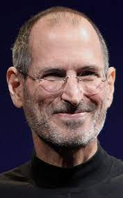
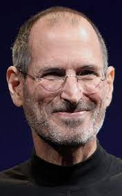

Steve Jobs (1955-2011) foi um empresário norte-americano, fundou a Apple. Criou o "Macintosh", o "iPod", o "iPhone" e o "iPad". A Apple revolucionou a indústria de computadores pessoais, os filmes de animação, o mundo da música e dos telefones celulares.
Steve Paul Jobs (1955-2011) nasceu em São Francisco, Califórnia, no dia 24 de fevereiro de 1955. Filho do sírio Abdulfattah Jandali e de Joanne Schieble foi adotado, por Paul Jobs, mecânico e membro da Guarda Costeira e da contadora Carla Jobs. A família morava em Mountain View, na Califórnia, dentro da área que mais tarde se tornaria conhecida como Vale do Silício. Ainda pequeno, viu seu pai montar e desmontar aparelhos eletrônicos na garagem da família. Depois do curso básico, Jobs cursou a Homestead High School entre 1968 e 1972. Nessa época, conheceu Steve Wozniak (1950), que estudava na Universidade da Califórnia, em Berkley e, era especialista em fazer programas e circuitos integrados. Concluído o curso médio, Jobes, matriculou-se na Reed College. Depois de seis meses abandonou o curso, mas continuou frequentando a faculdade, como ouvinte, das aulas de caligrafia, que posteriormente destacou como importante para sua formação.
Em 1976, Jobs e Wozniak instalaram uma “fabrica” de computadores, na garagem da casa da família de Jobs na Califórnia. Em 1976 é lançado o computador "Apple I", o primeiro computador pessoal, vendido já montado, que era apenas uma placa mãe coberta com alguns chips e instalada em uma caixa de madeira. Em 1977 é lançado o computador "Apple II", que apresentava um mouse e um disco rígido interno. Com o passar dos anos, as criações de Jobs e Wozniak revolucionaram a indústria de computadores, tornando as máquinas menores e mais baratas.
Em janeiro de 1984 é lançado o "Macintosh" apelidado de "torradeira bege", que esquentava muito, pois não tinha ventilador. Apesar do sucesso das vendas e do desempenho superior aos PCs da IBM, o Macintosh não era compatível com a IBM. Centralizador e explosivo, nesse mesmo ano, Steve Jobs é afastado de sua própria empresa, por divergir das táticas de vendas.